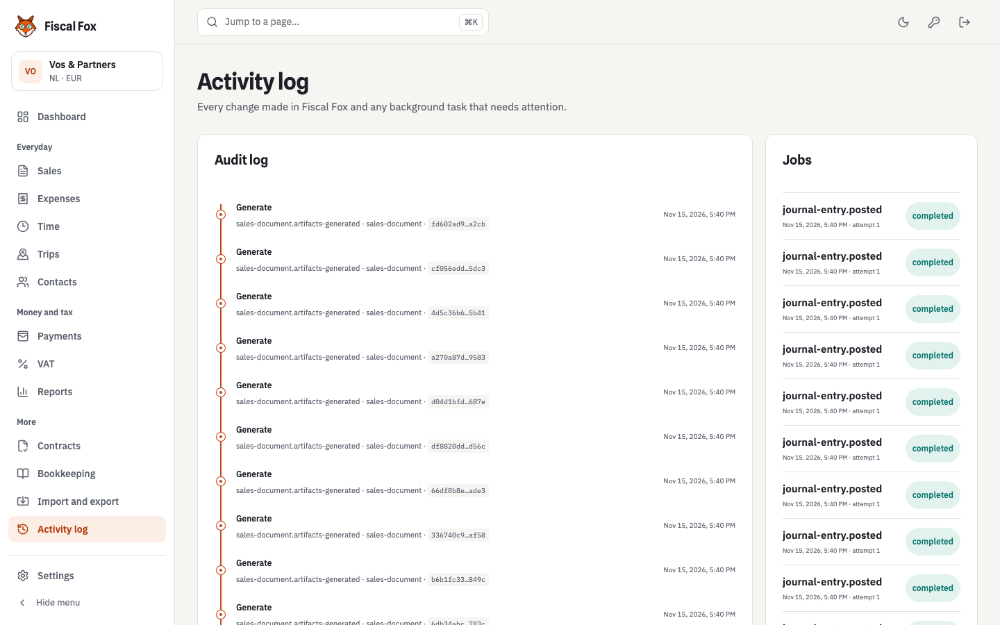

Activity log
The Activity log shows every change made in Fiscal Fox and the background tasks that do work for you, such as sending emails, reading receipts, and preparing exports.

Audit log
Each entry shows what happened (for example, a contact or sales document was created), the record it concerns, and when. The audit log is written in the same step as the change itself, so it cannot miss one.
Owners, admins, and accountants can see the audit log. Other roles see "Audit access is restricted."
Jobs
Background work runs as jobs. Each job shows its name, when it last changed, how many attempts it took, and its status.
When a job fails, the page shows Background work needs attention together with the error. Fix the cause (for example, a missing provider setting or an invalid record), then retry the original action. Refresh reloads the list.
The top bar shows a counter whenever jobs are running or have failed, so you do not need to keep this page open.